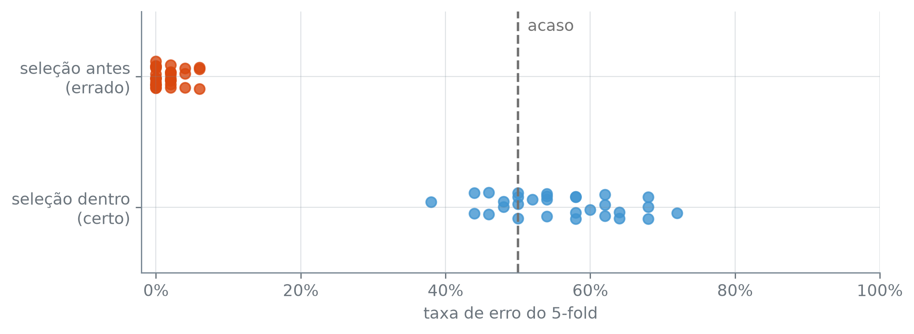

X = auto[["potencia", "peso", "cilindrada", "aceleracao"]]
y = auto["milhas_por_galao"]
dez_grupos = KFold(10, shuffle=True, random_state=10)
knn = KNeighborsRegressor(n_neighbors=10)
def mse_cv(modelo, X):
return float(-cross_val_score(
modelo, X, y, cv=dez_grupos, scoring="neg_mean_squared_error"
).mean())
mse_sem_padronizar = mse_cv(knn, X)Vazamento: o Pré-processamento Dentro da Validação
A validação cruzada estima o erro em observações que o modelo não viu. A estimativa só vale se nada do ajuste tiver visto o grupo de validação, e o ajuste é mais que o fit do estimador. Tudo o que aprende do dado antes dele também conta: a média e o desvio padrão de uma padronização, a escolha de quais colunas usar. Quando uma dessas etapas é feita no conjunto todo, antes da divisão em grupos, o grupo de validação já influenciou o que o modelo recebe.
Vazamento (em inglês, data leakage) é a entrada, no ajuste do modelo, de informação das observações que deveriam servir só para medir o erro. Com vazamento, o modelo é julgado em observações que ele, de algum modo, já viu, e a estimativa do erro de teste sai otimista.
Padronizar antes ou dentro
O k-NN mede distância entre observações, e por isso precisa de padronização: sem ela, a coluna de maior escala decide sozinha quem é vizinho de quem, como a seção 7.3 mostrou. Nos dados Auto, um k-NN com 10 vizinhos prevê milhas_por_galao a partir de potencia, peso, cilindrada e aceleracao, e o 10-fold mede o erro de três jeitos: sem padronizar, padronizando a tabela toda de uma vez antes da validação cruzada, e com o StandardScaler dentro do Pipeline.
KNeighborsRegressor(n_neighbors): o k-NN para resposta numérica, que prevê a média da resposta dos n_neighbors vizinhos mais próximos.
O jeito errado padroniza a tabela inteira e só depois entrega o resultado à validação cruzada:
X_padronizado = StandardScaler().fit_transform(X)
mse_padronizado_antes = mse_cv(knn, X_padronizado)O jeito certo põe o StandardScaler no Pipeline e entrega o Pipeline inteiro:
mse_padronizado_dentro = mse_cv(make_pipeline(StandardScaler(), knn), X)
pd.DataFrame(
{"MSE do 10-fold": [
round(mse_sem_padronizar, 2),
round(mse_padronizado_antes, 2),
round(mse_padronizado_dentro, 2),
]},
index=["sem padronizar", "padronizando antes (errado)", "padronizando dentro (certo)"],
)| MSE do 10-fold | |
|---|---|
| sem padronizar | 17.43 |
| padronizando antes (errado) | 14.93 |
| padronizando dentro (certo) | 15.06 |
A diferença entre os dois códigos é onde o fit do StandardScaler acontece. No errado, ele acontece uma vez, em todos os carros, e cada grupo de validação é padronizado com uma média e um desvio que ele mesmo ajudou a calcular. No certo, o cross_val_score ajusta o Pipeline inteiro em cada grupo de treino: o StandardScaler aprende a média e o desvio só dos carros de treino, e o grupo de validação é padronizado com esses números, como um carro novo seria.
Padronizar importa: o MSE cai de 17,43, sem padronizar, para 15,06, com o StandardScaler dentro, uma diferença de 2,37. Onde padronizar importa pouco neste caso: 14,93 no jeito errado contra 15,06 no certo, uma diferença de 0,13. O motivo aparece nos números que o StandardScaler aprende.
treino, validacao = next(dez_grupos.split(X))
print(f"{len(X)} carros: {len(treino)} de treino e {len(validacao)} de validação")
pd.DataFrame({
f"média, {len(X)} carros": X.mean().round(2),
f"média, {len(treino)} de treino": X.iloc[treino].mean().round(2),
f"desvio, {len(X)} carros": X.std().round(2),
f"desvio, {len(treino)} de treino": X.iloc[treino].std().round(2),
})392 carros: 352 de treino e 40 de validação| média, 392 carros | média, 352 de treino | desvio, 392 carros | desvio, 352 de treino | |
|---|---|---|---|---|
| potencia | 104.47 | 103.63 | 38.49 | 37.72 |
| peso | 2977.58 | 2952.62 | 849.40 | 850.05 |
| cilindrada | 194.41 | 190.77 | 104.64 | 103.99 |
| aceleracao | 15.54 | 15.54 | 2.76 | 2.71 |
next(dez_grupos.split(X)) pega só a primeira das dez divisões, um par com as posições do treino e as da validação. No primeiro grupo, tirar os 40 carros de validação move a média de peso de 2.977,58 para 2.952,62, e a padronização quase não muda. O vazamento existe, e é pequeno porque uma média de centenas de carros mal sente 40 deles. Há etapas em que ele não é pequeno.
Quando o vazamento decide tudo
Um conjunto de dados fabricado para não ter nada a aprender: 50 observações, 25 de cada classe, e 5.000 colunas de ruído sorteadas de uma normal padrão, sem relação nenhuma com a classe. A classe de uma observação nova não depende de nenhuma das 5.000 colunas, e um classificador qualquer acerta como quem joga uma moeda justa: a taxa de erro de teste é 50%.
def conjunto_de_ruido(rng):
X = rng.normal(size=(50, 5000))
y = rng.permutation(np.repeat([0, 1], 25))
return X, y
rng = np.random.default_rng(10)
X_ruido, y_ruido = conjunto_de_ruido(rng)
X_ruido.shape, int(y_ruido.sum())((50, 5000), 25)rng.normal(size=(linhas, colunas)): uma matriz de sorteios da normal com média 0 e desvio padrão 1, do tamanho pedido.
np.repeat([0, 1], 25): 25 zeros seguidos de 25 uns.
rng.permutation(arr): uma cópia de arr com os elementos numa ordem sorteada. Aqui, embaralha as 50 classes.
Com tantas colunas e tão poucas linhas, um procedimento comum é escolher primeiro as colunas mais promissoras e ajustar o modelo só nelas: as 100 colunas que mais separam as duas classes, e um k-NN com um vizinho.
cinco_grupos = KFold(5, shuffle=True, random_state=10)
vizinho = KNeighborsClassifier(n_neighbors=1)
X_escolhidas = SelectKBest(f_classif, k=100).fit_transform(X_ruido, y_ruido)
erro_errado = 1 - cross_val_score(vizinho, X_escolhidas, y_ruido, cv=cinco_grupos).mean()SelectKBest(score_func, k): dá a cada coluna uma pontuação calculada por score_func e fica com as k de pontuação mais alta. Como o StandardScaler, aprende com fit e aplica com transform; fit_transform faz os dois de uma vez.
f_classif: a pontuação usada aqui. Para cada coluna, é maior quanto mais as médias das classes se afastam nela, em relação à dispersão dentro de cada classe.
O jeito certo põe a seleção de colunas dentro do Pipeline:
selecao_e_vizinho = make_pipeline(SelectKBest(f_classif, k=100), vizinho)
erro_certo = 1 - cross_val_score(selecao_e_vizinho, X_ruido, y_ruido, cv=cinco_grupos).mean()
round(float(erro_errado) * 100, 2), round(float(erro_certo) * 100, 2)(2.0, 48.0)Com a seleção feita antes, o 5-fold estima 2% de erro, num problema em que nenhum classificador passa do acaso. Com a seleção dentro do Pipeline, estima 48%. As 100 colunas do jeito errado foram escolhidas olhando a classe das 50 observações, inclusive das que depois servem de validação. Entre 5.000 colunas de ruído, algumas separam aquelas 50 observações por puro acaso, e a validação cruzada mede o acerto nesse acaso, que não se repete em observação nova. No jeito certo, cada grupo de treino escolhe as suas próprias 100 colunas sem ver a classe do grupo de validação, e o acaso que ele encontra no treino não vale para a validação.
O desenho deste exemplo vem de Hastie et al. (2009), seção 7.10.2.
Trinta conjuntos de ruído
Um conjunto só pode ter saído por sorte. A mesma comparação, repetida em 30 conjuntos de ruído, cada um com a sua partição em cinco grupos:
rng = np.random.default_rng(10)
erros_errados, erros_certos = [], []
for r in range(30):
X_r, y_r = conjunto_de_ruido(rng)
grupos = KFold(5, shuffle=True, random_state=r)
escolhidas = SelectKBest(f_classif, k=100).fit_transform(X_r, y_r)
erros_errados.append(1 - cross_val_score(vizinho, escolhidas, y_r, cv=grupos).mean())
erros_certos.append(1 - cross_val_score(selecao_e_vizinho, X_r, y_r, cv=grupos).mean())
erros_errados, erros_certos = np.array(erros_errados), np.array(erros_certos)
todos_errados_abaixo_de_todos_certos = bool(erros_errados.max() < erros_certos.min())
pd.DataFrame(
{
"menor (%)": [round(float(e.min()) * 100, 2) for e in (erros_errados, erros_certos)],
"média (%)": [round(float(e.mean()) * 100, 2) for e in (erros_errados, erros_certos)],
"maior (%)": [round(float(e.max()) * 100, 2) for e in (erros_errados, erros_certos)],
},
index=["seleção antes (errado)", "seleção dentro (certo)"],
), todos_errados_abaixo_de_todos_certos( menor (%) média (%) maior (%)
seleção antes (errado) 0.0 1.60 6.0
seleção dentro (certo) 38.0 55.47 72.0,
True)deslocamento = np.random.default_rng(10).uniform(-0.12, 0.12, size=(2, 30))
fileiras = [
(erros_errados, 1, "C1"),
(erros_certos, 0, "C0"),
]
fig, ax = plt.subplots(figsize=(8, 3))
for erros, altura, cor in fileiras:
ax.scatter(erros, altura + deslocamento[altura], s=40, alpha=0.8, color=cor)
ax.axvline(0.5, color="0.45", linestyle="--", linewidth=1.5)
ax.annotate("acaso", xy=(0.5, 1.35), xytext=(6, 0), textcoords="offset points", color="0.45")
ax.set_yticks([0, 1], ["seleção dentro\n(certo)", "seleção antes\n(errado)"])
ax.set_ylim(-0.5, 1.5)
ax.set_xlim(-0.02, 1.0)
ax.xaxis.set_major_formatter(lambda valor, _: f"{valor:.0%}")
ax.set_xlabel("taxa de erro do 5-fold")
plt.tight_layout()
plt.show()
ax.axvline(x, color, linestyle): uma linha vertical na posição x, de cima a baixo do gráfico.
ax.annotate(texto, xy, xytext, textcoords): escreve texto junto ao ponto xy; com textcoords="offset points", xytext é um deslocamento em pontos tipográficos.
ax.set_yticks(posicoes, rotulos): põe marcas no eixo vertical só nas posicoes dadas, com os rotulos no lugar dos números.
todos_errados_abaixo_de_todos_certos confirma que, nos 30 conjuntos, o maior erro estimado com a seleção antes fica abaixo do menor erro estimado com a seleção dentro. O jeito errado vai de 0% a 6%, com média de 1,60%; o certo, de 38% a 72%, com média de 55,47%. O certo não acerta 50% em cada conjunto, e nem deveria: com 50 observações e cinco grupos de 10, a estimativa da validação cruzada oscila muito de uma amostra para outra, como a seção 10.4 mediu. Ela oscila em volta de 50%, onde está o erro verdadeiro. O errado não oscila em volta de nada que exista: ele mede o quanto o acaso das 5.000 colunas consegue separar 50 observações, e esse acaso é grande.
Os dois exemplos cometem o mesmo erro, uma etapa que aprende do dado ajustada fora da validação cruzada. O tamanho do estrago depende do quanto a etapa aprende. A padronização aprende uma média e um desvio por coluna, sem olhar a resposta; a seleção de colunas olha a resposta e escolhe, entre 5.000, as que melhor a acompanham naquelas 50 observações.
Toda etapa que aprende do dado (padronizar, preencher valores faltantes, escolher colunas, reduzir a dimensão) entra no Pipeline, e o Pipeline inteiro entra no cross_val_score. Assim cada etapa é reajustada em cada grupo de treino, e o grupo de validação chega ao modelo como uma observação nova chegaria.
Hastie, Trevor, Robert Tibshirani, e Jerome Friedman. 2009. The Elements of Statistical Learning. 2nd ed. Springer.